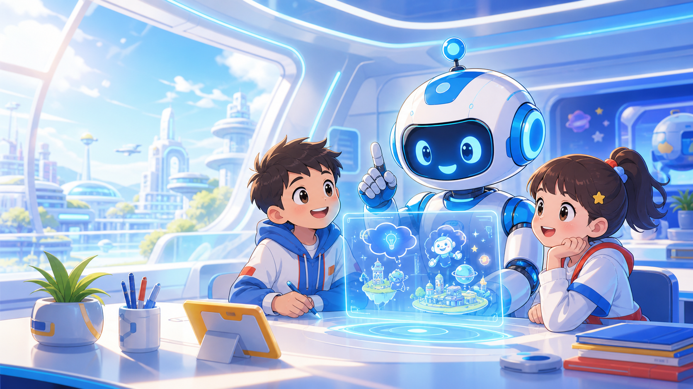

AI未来家长课堂 · 第5课高质量样板
把脑袋里的画说清楚
这是一节给家长边讲边操作、给孩子边看边参与的AI创意表达课。第一阶段先把第5课做扎实，确认后再扩展31课。

视觉风格样板 V1
1节深度样板
先把第5课做到可讲、可玩、可分享
后续31课
确认样板后再批量扩展完整课程
30分钟
每节课按家庭讲课节奏设计
项目定位
给朋友免费分享的家庭AI课
第一阶段目标不是卖课，而是先做出一个让家长愿意打开、孩子愿意参与、朋友愿意转发的样板。
二维码
关注思美奇主理人
Jerry Fu 视频号
第5课结构
从模糊想法到清楚指令
孩子不只是点击答案，而是在网页里拼描述、改错误、生成自己的AI画面设计卡。
30分钟家庭课